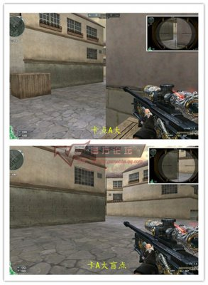
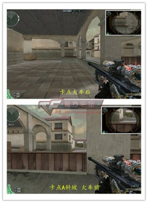
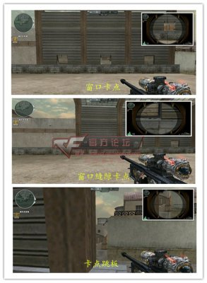
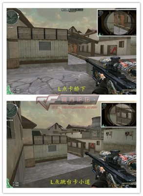
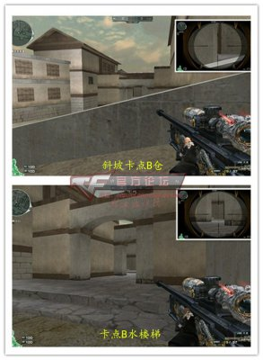
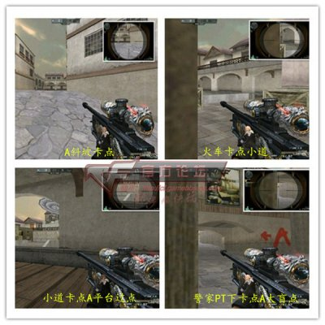
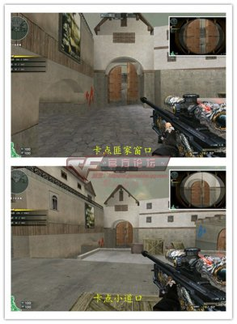
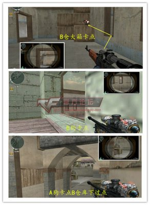

黑色城镇作为“国图”对于大多数玩家都非常熟悉了，狙击手在这张爆破地图上许多点位的破点和防守都起到至关重要的作用。接下来就主要为新手玩家带来一些简单实用的点位介绍。
一、潜伏者
1、A区

在A大的卡点上推荐使用跳跳蹲上箱后进行卡点，可以有效的减少手雷和闪光的攻击，同时可以躲避常规下保卫者的预瞄点。在没有进入到A坑时一定要注意A大盲点的位置，潜在的狙击手在第一名进入A坑的潜伏者没有发现时是很大的隐患，一定要自己进行清点确认。

进入到A坑后首先要对火车后进行架点，消灭火车后潜伏的狙击手。然后是对A斜坡和火车前可能出现的保卫者进行击杀。
2、中路

潜伏者中路窗口的卡点2号位是距离窗口最近的位置。在中路的卡点上推荐靠后通过闪蹲卡点保卫者平台的狙击手。太靠前的站位虽然能看到平台上下所有的点位，但是准心上下拉动的幅度较大，对方有上中下3个点位，而自身的点位非常固定很容易被击杀。 窗口的缝隙卡点非常隐蔽，可以针对保卫者平台和A狗过点间的极限反映击杀。卡点跳板一般是开局防止保卫者中路前压的侦查点位。

L点卡A桥下可以帮助进入小道的队友清除隐患。或者在L跳台上对小道进行防御型防守。
3、B区

在B斜坡卡点B仓库门的位置劲量选择靠左边卡缝隙的位置。这样在对方狙击手视角里只有一个胳膊可以射击。 卡点B水楼梯过点的时候一定要在没有被对方发现时第一时间到达，通常保卫者为了躲避手雷和狙击都会选择直接跳入B水。这时候只需要等待侧身击杀了。
二、保卫者
1、A区

A大的狙击顶前防守和盲点的卡点个人认为是不划算的，非常容易被手雷和闪光集火，盲点位置一旦被发现就很难在全身而退，可以出其不意但是不能作为一个常规点位经常使用。 A斜坡的卡点对A大和A坑的防守都是非常有效的，准心可以同时兼顾A大和A坑2个点位。同时不用担心闪光和手雷攻击，即使潜伏者投掷道具也是有先手开枪的机会。 A区包点的卡点要根据队友的站位来选择，如果队友防守小道旋转那就放空A包卡小道过点，如果队友前顶A大就可以选择火车后架点小道。 最后是警家PT下对A大盲点的卡点，通过掩体的掩护和距离上的优势很难被发现。
2、中路

中路的卡点推荐在楼梯处卡匪家窗口，一般潜伏者的的预瞄点都是中门下和平台上位置。 平台上箱子的卡点可以对A小道口和A拐回撤小道敌人进行截击。这里最好不要使用双倍镜卡点，要注意中门可能出现的敌人。
3、B区

B仓前顶的卡点强烈不推荐直接拉出在B仓库门的闪蹲，很容易被手雷一波带走或者刚开镜就被闪光的尴尬局面。推荐使用B仓窗口跳箱卡点。 B狗的卡点非常常规，但是对于B区构造也非常实用。 最后是A狗对进入B包过点的一个点位，可以作为放空B区或包点内隐蔽缩防时的一个侦查击杀点位使用。